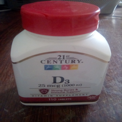
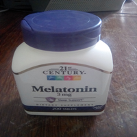
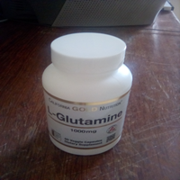
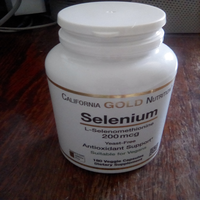

| Foto |
Descrição |
Preço (R$) |
Quantidade disponível |
|  |
Esse nutriente é extremamente importante para o bom funcionamento do organismo porque é ele quem garante que os ossos e os dentes permaneçam fortes, além de garantir a boa saúde cardíacaO estudo feito na Irlanda e publicado no Journal of Post-Acute e Long-Term Care Medicine, aponta que a falta deste nutriente pode aumentar o risco de depressão em pessoas com mais de 50 anos.
Desse modo, foi constatado que esta vitamina pode auxiliar na prevenção da depressão e na melhora do quadro de pessoas que já tratam a doença.
De acordo com o psiquiatra e presidente do departamento científico de psiquiatria da Associação Paulista de Medicina (APM), Kalil Dualibi, é fundamental verificar o nível do nutriente nos pacientes com depressão e fazer suplementação sempre que necessário. 110 CAPSULAS |
R$24,99 |
43 |
|  |
Melatonina é um hormônio produzido naturalmente pelo corpo humano. Também conhecido como hormônio do sono, uma de suas funções básicas é induzir a pessoa a dormir. Ela está relacionada com a regulação do metabolismo ao longo do dia, o que inclui os períodos em que a pessoa está dormindo ou acordada.Como a melatonina é um hormônio relacionado ao ciclo do sono, hoje essa substância é indicada para quem tem dificuldade de começar a dormir, de manter o sono ou de ter um descanso de qualidade durante a noite. Isso inclui as seguintes pessoas:
Idosos, que costumam ter a melatonina mais baixa naturalmente
Pessoas que trabalham em turnos noturnos e precisam dormir durante o dia
Vespertinos, ou seja, pessoas que só conseguem dormir e acordar mais tarde
Viajantes que precisam se recuperar do jet lag ou querem prevenir esse problema com os fusos horários. Em muitos casos pode resolver problemas de insonia. 200 CAPSULAS |
R$49,99 |
37 |
 |
Ele possui três tipos de ácidos graxos (ALA, EPA e DHA) chamados de essenciais, pois o organismo não consegue produzi-los. Quando as membranas celulares estão repletas destes ácidos as funções das células ocorrem de forma muito melhor.Ele também age em um componente dos neurônios e no recobrimento da retina ocular, parte dos olhos que tem o poder de realizar o processo de enxergar. 500 CAPSULAS |
R$169,99 |
15 |
|  |
A glutamina ou L-glutamina é o aminoácido mais abundante no corpo humano. Trata-se de uma das moléculas que forma a proteína necessária para nutrir e reparar tecidos diversos (pele, unha, músculos, órgãos).Serve para imunidade de atletas com quadros de overtraining quando há um excesso de treino maior do que o corpo consegue se recuperar A suplementação desse aminoácido também é indicada para pacientes com quadros de catabolismo severo (perda de massa magra), como acontece em pacientes com queimaduras graves, que realizaram cirurgias grandes ou têm alguns tipos de câncer. 90 CAPSULAS |
R$34,99 |
42 |
|  |
O selênio é um mineral com um alto poder antioxidante e por isso ajuda a prevenir doenças como o câncer e a fortalecer o sistema imunológico, além de proteger o contra problemas cardíacos como a aterosclerose.é recomendado uma suplementação em casos como: em pessoas com HIV, doença de Crohn e pessoas que são alimentadas através de soros nutritivos injetados diretamente na veia.O excesso de selênio no organismo pode causar problemas graves como falta de ar, febre, náuseas e mau funcionamento de órgãos como fígado, rins e coração, portanto é nescessário cautela com seu uso. 180 CAPSULAS |
R$69,99 |
12 |